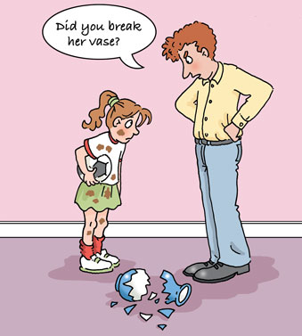

2 What do we mean by ‘meaning’?¶
The example from the law in the previous section shows that ‘meaning’ can be a more complex affair than we might normally assume. It’s not only about the dictionary meaning of the words used, for example, or about the logical function of an utterance. In the case of the cross-examining example, the second, more assertive style of questioning conveyed the speaker’s superior authority and so had an interpersonal element to it as well. This expanded view of meaning – as incorporating a range of functions, and involving more than just giving and receiving information – is a fundamental insight of functional linguistics, a field in which Michael Halliday was a major figure. Halliday proposed that language serves three overarching functions, which are always operating together.
Box 1 The three metafunctions¶
Ideational metafunction We use language to talk about our experience of the world, including the worlds in our own minds, to describe events and states and the entities involved in them. Interpersonal metafunction We also use language to interact with other people, to establish and maintain relations with them, to influence their behaviour, to express our own viewpoint on things in the world, and to elicit or change theirs. Textual metafunction Finally, in using language, we organise our messages in ways that indicate how they fit in with the other messages around them and with the wider context in which we are talking or writing.
Reference: (Adapted from Thompson, 2014, p. 28)
Language users will not normally be aware that the texts they produce and the interactions they engage in will perform all these three functions at one and the same time.
Activity 6: Three types of meaning¶
Timing: 15 minutes
Question¶

Figure 6 The three metafunctions
In the brief utterance seen in the cartoon above, try to describe what is going on in terms of the three metafunctions. Write brief notes in the blank text box.
How might these three different strands of meaning be altered with a change in the wording chosen by the speaker?
Discussion¶
The speaker is reporting a specific experience of an event, which is that a vase has been broken (though as yet the speaker does not appear to know by whom, if we go by verbal clues alone) – this is the ideational metafunction. At the same time, the speaker is interacting with the child, by asking her a question to try to establish whether she was the person who broke the vase: this is the interpersonal metafunction. And finally, he is using language to organise his message so that it makes sense and fits into the wider context – for example, both speakers clearly know who the vase belongs to and so the word ‘her’ is used, reflecting the interlocutors’ shared knowledge. This is the textual metafunction.
The ideational meaning of the utterance could and would be changed if it were to reflect a different experience – for example, ‘her vase’ might become ‘my phone’ if the event were different. Or the speaker could focus on a completely different aspect of the same situation e.g. What a mess you’ve made. The interpersonal meaning could be subtly changed e.g. it could be more accusatory: You broke her vase, didn’t you? (Some might say that the visual image here fits better with that wording.) The textual meaning would change if, in the context, the father had instead written the daughter a note: ‘Amelia, I have just noticed the bits of vase lying on the floor. I want to know if that has anything to do with you. We shall talk when I get home. Dad’. This would be a more planned communication, and aspects of the situation (e.g. ‘on the floor’) would need to be put into words instead of being communicated non-verbally.
These three aspects of meaning are deeply intertwined and are not usually manipulated separately in this way: that is, we don’t normally change one metafunction without also changing the others. For example, in such a situation, the speaker could have chosen to focus on solving the problem (rather than finding out who did it) – which is predominantly an ideational dimension of the meaning and at the same time to emphasise solidarity, which is an aspect of interpersonal meaning, e.g. by saying We’d better clear this up before she notices.
Now that you have briefly been introduced to the three metafunctions, the next three sections of the course give you an opportunity to consider them in greater detail. In particular, you will get to see how they are related to the language choices people make in different contexts.